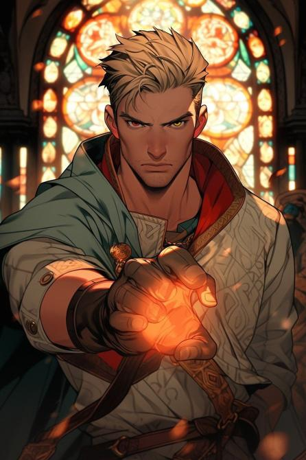

A floating, angel with its body parts floating separately from one
another. Above its head is a singular, gray halo, and its wings are
segmented into multiple "feathers". The angel exudes a warm aura,
presenting as a welcoming and kind spirit.
Host: Nico

SKILLS
|
The Hands that Burn will Heal [8SP/Round]
|
|
Blue and orange fire starts to wreath around the host as
their eyes starts to glow distinctly blue and red. As a free
action, you can enter The Hands That Burn Will Heal state,
while in this state, half of all fire damage dealt by the
host is converted to Fiery Life points. Additionally, when
casting spells that restore hitpoints, the next instance of
fire damage dealt by the host gains an additional value
equal to half the healing as fire damage, this effect does
not stack over multiple healing spell casts, and will
instead take the most recent healing spell cast.
|
|
All Life Has Meaning [7SP]
|
|
As a bonus action, you can choose to remove one death fail
from any creature within 40ft of you on your turn, when
doing so, you can also choose to expend Fiery Life points to
restore their hitpoints by a number equal to the amount of
Fiery Life points you spend. Finally as a passive ability,
all creatures within 40ft of you can reroll their death
saves once per combat.
|
|
PASSIVE: No Ailment Too Difficult to Treat
|
|
By touching a character, you may seal any minor wounds on
their body, provided no body part is severed or if the wound
is no larger than one foot in diameter. Additionally, you
can also calm the minds of characters in emotional distress.
|
|
PASSIVE: Origin of Scars
|
|
When inspecting a character within 5ft of you, you can
instantly discern how the wound came to be, e.g: Be able to
discern what kind of weapon was used, if wound was caused
chemically, spiritually or physically.
|
|
PASSIVE: Infernal Salve
|
|
Whenever doing fire damage on your turn, recovers HP equal
to proficiency bonus.
|
SIGNATURE
|
Therapeftikí Fotiá, The Healing Flame [10SP]
|
|
As a reaction, if an allied character within 40ft of you is
downed or killed, you can use your reaction to wreathe them
in flames, this character can be yourself. The flames deals
fire damage to all hostile characters within 40ft of the
user equal to your proficiency bonus + WIS OR SOUL mod, and
the downed character is instantly healed for the damage that
downed the character, and the effects of going down are
reverted (i.e Instant failed death save)
|